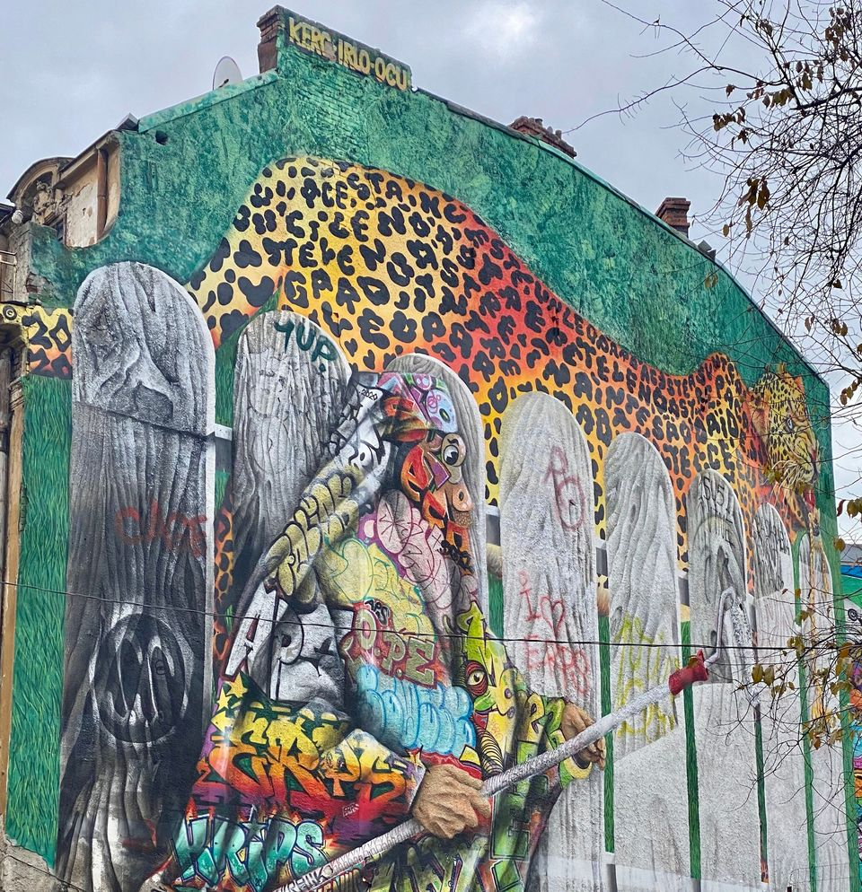

The Leopard of silence - Street Art in BucharestDec 26, 2022 3 min read RomaniaBucharest, Romania was very different than how I imagined. People were very cool, unjudgmental and very calm. Usually cities are very different as people tend to be fast and look in a hurry.